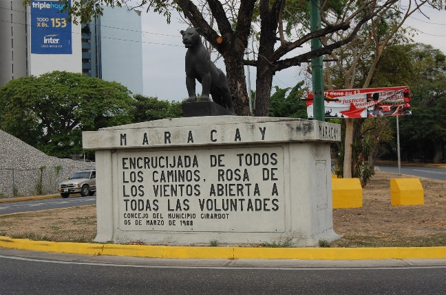
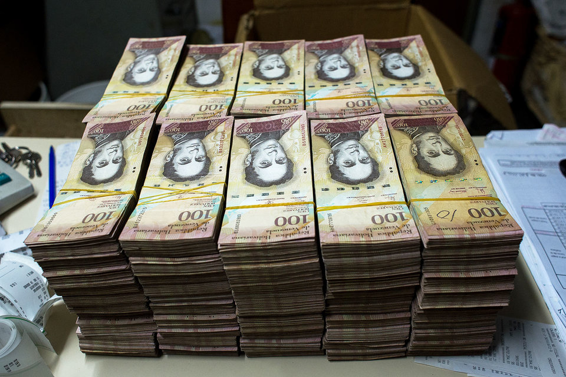
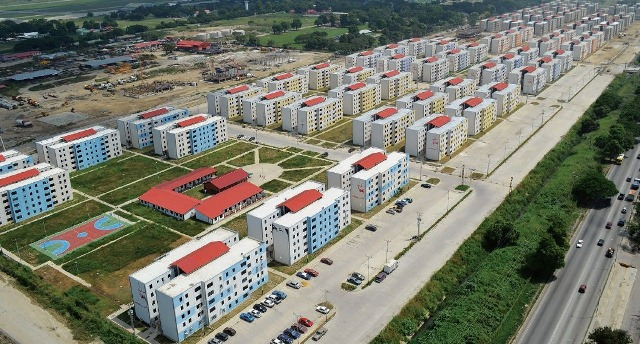

- Холодно лишь под кондиционером
- Очень красивая природа
- Чудесной красоты девушки
- Утро начинается не с cafe
- Вероятность дождя зимой нулевая
- А вот летом наоборот
- Йогурт хорошо, а арепа лучше
- Танцы и музыка
- И самый вкусный в мире ром

Родная Венесуэла
Почему родная?
Далеко-далеко на другом конце света располагается малознакомая большинству белорусов страна. Венесуэла – государство на севере Южной Америки, омывается Атлантическим океаном, а также Карибским морем, по которому плавал Джек Воробей". Да, простите, капитан Джек Воробей.
И вышло так, что автор этого текста оказался среди меньшинства. И когда на втором занятии группа будущих тестировщиков знакомилась и рассказывала о себе, автор то ли от волнения, то ли от скромности забыл расказать маленький факт, что перед тем, как оказаться в Гомеле и пробовать найти себя в IT, прожил в этой сказочной стране долгих 4 года. Благодаря этому тему сайта было выбрать несложно.
Маракай
Маракай (исп. Maracay) — город на севере Венесуэлы. Столица и крупнейший город штата Арагуа. Население — 1.4 млн жителей - пятый город в стране после столицы Каракаса, Маракайбо, Валенсии и Баркисимето. Город расположен в 25 км от побережья Карибского моря, от которого его отделяет горный хребет, в 80 км западнее Каракаса. Центр сельскохозяйственного региона, где выращиваются какао, кофе, табак. А еще в этом городе жил и трудился ваш покорный слуга.
Работа
Однажды покойный президент Уго Чавес в очередной раз прилетел к своему другу в Минск, где ему был показан
новый, тогда еще в стадии строительства панельный микрорайон "Каменная Горка".
Wow, que bueno! Me gusta mucho! А на холмах такое слабо построить?
- воскликнул Уго.
"Кому слабо? Мне?" - не понял подкола Александр Григорьевич.
До билета Минск-Франкфурт-Каракас новоиспеченному сотруднику Белзарубежстроя
оставалось около полугода...
Автор полетел туда не каким-нибудь там джуном-чернорабочим, а прямо-таки лидом - начальником строительной лаборатории, где командовал бригадой из венесуэльских специалистов и был в ответе за каждый кубометр бетона, который отпускался на стройплощадку, и за косяки венесуэльцев прилетало именно ему. Многие белорусские сми про нас писали. А вот про девочек упс.
Местная валюта и ее проблемы
Местная валюта здесь - боливар, в текущий момент подвержена геперинфляции. Зацените масштабы: в начале 2011-го года один американский доллар стоил 8 венесуэльских боливаров. В декабре 2016-го за один доллар дают 3500 боливаров. Стоит заметить, что в стране официальным курсом в обменниках до сих пор остаётся курс 1 доллар = 6 боливар. Однако, на чёрном рынке, у таксистов и в «задних кассах магазинов», предлагают поменять по неофициальному курсу. Если менять доллары по чёрному курсу, то цены в Венесуэле очень низкие. Если же менять их по официальному, то они почти европейские. Логично, что по официальному курсу никто не меняет. При всем при этом наибольшей купюрой в стране остается купюра номиналом в 100 боливаров и когда вы поменяете у знакомого бандита 100$ то получится вот такая картина. 
Сухие цифры
За весь срок работы нашей компанией было построено 2 огромных жилых квартала общим количеством в 184 пятиэтажных дома, 40 квартир в доме, 7360 семей по итогу получило новое жилье, и автор принял непосредственное участие во всем этом. Не считая построенных десятков социальных объектов: школ, детских садов, больницы, пожарного и полицейского участков, церквей. Делаем мир лучше - значит живем полноценной жизнью, не так ли? 
наверх